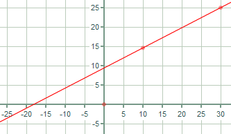

Equation of a Line (point - slope form) (Coordinate Geometry)
Try this
The slider on the right controls the slope (m) of the line. Drag the point P.
The equation and the line will change accordingly. You can also drag the origin.
Any straight
line
on the
coordinate plane
can be described by various equations. Among them is the point-slope form, so called because the givens are a point somewhere on the line, and the slope of the line.
The equation looks like:
Where:
| x,y |
are the coordinates of any point on the line |
| m |
is the slope of the line
|
| Px , Py |
x and y coordinates of the given point P that defines the line |
|
Recall that the
slope
(m) is the "steepness" of the line.
In the figure above, adjust m with the slider and drag the point P to see the effect of changing the two givens.
Equations of this type that have no exponents in them (such as x2) are called 'linear equations'
because they always graph as straight lines. The word "linear" is derived from "line".
What is the equation used for?
The equation of a line is used in two main ways.
-
As a compact way of defining a particular line.
If I wanted to tell you how to draw a particular line by email, I could write "draw the line defined by
y = 1.2(x-15)+27 ".
You could then plot this line exactly.
I could also tell it to you in English: "draw a line with slope 1.2 that passes through the point P(15,27)"
- To locate points on the line.
If I wanted to find a point on the same line which has an x-coordinate of say 20,
I could insert 20 for x in the equation y=1.2(x-15)+27 and find that its y-coordinate is 33.
Similarly, if I was given the y-coordinate, I could solve it for x instead.
Another form
Sometimes you see this equation form written slightly differently, with the Py term on the left.
So instead of
y = m(x-Px ) + Py
We see
y - Py = m(x-Px )
These two are really the same equation, but the top one is preferred because it
looks similar to the slope-intercept form (y=mx+b) to which it is closely related.
Example 1. Draw the line y = 0.52(x-30)+25

Fig 1. Line represented by y = 0.52(x-30)+25
The idea is to find two points on the line, then draw the line through them.
For the first point, recall that the given point's coordinates are in the equation. Px is 30, and Py is 25.
So plot the point at (30,25) as in Fig 1.
For a second point, let us pick at a random point where x=10. Substitute 10 as x into the equation:
y = 0.52(10-30)+25
Simplifying we get
y = 14.6
So we plot a second point at (10 , 14.6). We now draw the line through the two points as in Fig 1.
Try it yourself. You can print blank graph paper at
Blank Graph Paper and try it yourself, perhaps with a different equation.
Example 2. Find where the line y = 0.52(x-30)+25 crosses the x-axis
We are being asked to find the coordinates of the point where it crosses the x-axis (y=0).
Referring to Fig 1, you can see that where the line crosses the x-axis, the y-coordinate is zero.
So we substitute zero into the equation for y, and solve it for x:
0 = 0.52(x-30)+25
Subtract 25 from both sides
0.52(x-30) = -25
Multiply out the parentheses
0.52x - 15.6 = -25
Subtract -15.6 from both sides
0.52x = -9.4
Divide both sides by 0.52
x = -18
Which agrees with what we see in Fig 1.
Things to try
-
In the diagram at the top of the page, press 'reset'. Drag around the point P.
Notice how the slope of the line remains constant, but the line always passes through P, as required by the definition of the line.
-
Press "reset". Adjust the slider that controls the slope.
Note how the line always passes through P as required by the line definition, but its slope varies.
Try a negative slope.
-
Press "zero" under the slider and then drag point P. Note that a zero slope is a horizontal line.
-
Adjust m, drag P to a new location, and then click on "hide details".
By looking at the graph, estimate the slope m and the coordinates of P, and write the equation of the line.
Then click "show details" and see how close you got. (To find the slope of a line, see Slope of a Line).
Other linear equation topics
Linear Function Explorer
(C) 2011 Copyright Math Open Reference.
All rights reserved